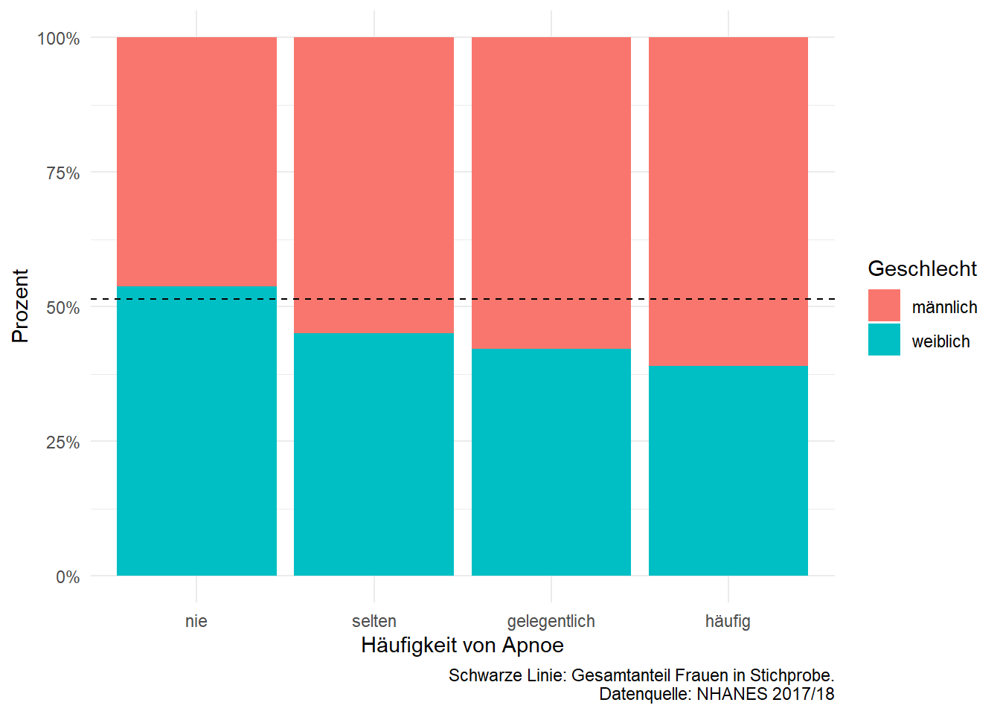
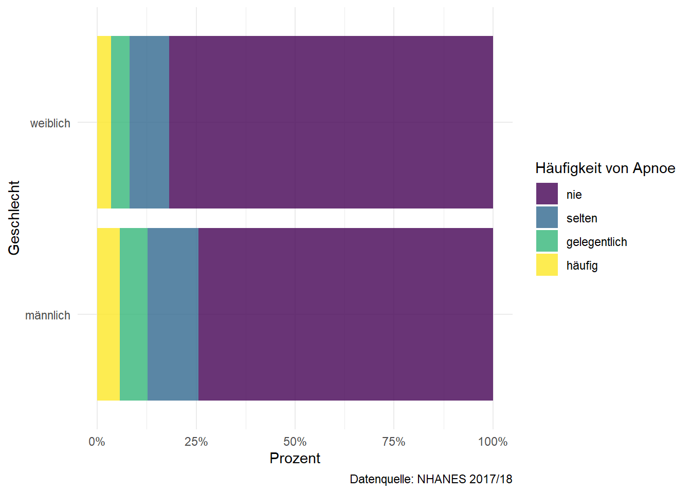

ggplot(data = fertility_gini, aes(x = year, y = tfr, color = country)) +
geom_line()6. Statistische Grafiken
Übung für Deskriptive Statistik
Code Austausch
Es gibt noch die Zeit, eure Codes für Aufgabe 2 hochzuladen, damit sie präsentiert werden!
Seht bitte die Ankündigung auf Moodle.
Lösung Aufgabe 2 Blatt 5 in Latex

Schlüsselfähigkeiten
Verteilungsfunktion und Dichte: fortgeschritten (Aufgabe 1)
Format der statistischen Grafiken kennenlernen und interpretieren (Aufgabe 4)
Format der statistischen Grafiken kritisch analysieren und das Design verbessern (Aufgabe 3)
Statistische Grafiken: selbständige Anwendung unter realen Szenarien mit R-Programmierung (Aufgabe 2)
Zusammenfassung
Grammar of Graphics
Geometrien: Linie, Balken, Punkte, Fläche, etc.
Ästhetische Zuordnungen: Farbe, Größe, Form, Position, etc.
Skalen: lineare Skala, log-Skala, etc.
Koordinatensysteme: kartesisches Koordinatensystem, Polarkoordinatensystem, etc.
Facetten: Aufteilung der Grafik in mehrere Panels
etc. (sehr fortgeschritten)
Farbskalen
Qualitative Farbskala: Farben ohne Ordnung
Sequentielle Farbskala: Farben mit Ordnung
Divergierende Farbskala: Farben mit Ordnung und Mittelwert / Neutralpunkt
Hierarchie der Wahrnehmung
Position
Abstand & Länge
Steigung & Winkel
Fläche
Volumen
Farben
Gelernte Grafiken
Mosaikplot
Histogramm
Streudiagramm
Liniendiagramm
Balkendiagramm / Säulendiagramm / Stapeldiagramm
Kreisdiagramm (immer vermeiden)
etc.
Kerndichteschätzer (KDE)
Motivation: Histogramm ist abhängig von der Anzahl der Bins bzw. Kantenlänge der Bins.
Lösung: Ersetze Histogramm durch glatte Funktion \(f\).
Kerndichteschätzer: \(K\) für Kernfunktion, \(h\) für Bandbreite.
\[\hat{f}(x) = \frac{1}{nh}\sum_{i=1}^{n}K(\frac{x-x_i}{h})\]
Weitere Vorteile: Berücksichtigung der Entfernung der beobachtenen Werte mit abnehmender Gewichtung.
Abhängigkeit von \(h\): zu klein \(\Rightarrow\) zu viele Details, zu groß \(\Rightarrow\) zu wenig Details. (Goodness of fit / Anpassungsgüte)
Aufgabe 1
\[f(x) = a\frac{x^3-x^2+x-1}{x-1}\mathbb{I}_{[2,5]}(x)\] Hinweis: Vereinfachen Sie zuerst den Ausdruck der Dichte. \[ \begin{align*} & \ x^3-x^2+x-1 = (x-1)(x^2+1) \\ & \ \Rightarrow f(x) = a(x^2+1)\mathbb{I}_{[2,5]}(x) \end{align*} \] (a) Bestimmen Sie den Wert von \(a\).
\[ \begin{align*} \int_{\mathbb R} f(x) dx & \ = \int_{2}^{5}a(x^2+1)dx \\ & \ = a \left[\frac{x^3}{3}+x\right]_2^5 \\ a(\frac{140}{3}-\frac{14}{3}) & \ \overset{!}{=} 1 \\ \Rightarrow a &\ =\frac{1}{42} \\ \text{Es gilt: } x^2+1 \geq 1 \ \forall x \in \mathbb R,& \ \text{ also } f(x) \geq 0 \ \forall x \in \mathbb R \text{ mit } a = \frac{1}{42} \end{align*} \]
(b) Bestimmen Sie die Verteilungsfunktion \(F(x)\).
Warum “fortgeschritten”?
Das gängige Vorgehen: Dichte integrieren und mit passenden Indikatorfunktionen modifizieren.
Hier: \[G(x) := \int_{2}^{x}\frac{1}{42}(x^2+1)dx, \ G(2) \neq 0\]
Deswegen brauchen wir eine Konstante \(c\), sodass \(G(2) + c = 0\).
Wir lösen die Gleichung, und erhalten \(c = -\frac{1}{9}\).
\[F(x) = \left(\frac{1}{42}(\frac{x^3}{3}+x)-\frac{1}{9}\right)\mathbb I_{[2,5]}(x) + \mathbb I_{]5,\infty[}(x)\]
(c) Berechnen Sie \(P(3<X<4)\).
\[P(3<X<4) \overset{\text{stetig}}{=} P(3\leq X\leq 4) = F(4)-F(3) =0.3175\]
Aufgabe 4

(a) Welche Untersuchungseinheiten aus welcher Grundgesamtheit werden in der Grafik dargestellt?
GG: Länder der Erde
UE: einzelne Länder
(b) Was für eine Erhebungsart und Datenstruktur liegen hier vor?
Erhebungsart:
Vollerhebung,
Längsschnittdaten (mehrere Beobachtungen mit mehreren Merkmalen pro UE.)
(c) Welches Skalenniveau haben Gesamtfruchtbarkeitsrate und Bevölkerungsanteil jeweils?
Gesamtfruchtbarkeit: (Anzhal Kinder), absolutskaliert
Bevölkerungsanteil: verhältnisskaliert (Prozent)
(d) Sind die auf der linken Seite der Grafik angegeben Zeiträume die Ausprägungen eines ordinal-, nominal- oder intervallskalierten Merkmals? Begründen Sie Ihre Antwort kurz.
ordinalskaliert: in Form von Intervallen und hat Ordnung.
(Alternativ: intervallskaliert, da die Intervalle gleich groß sind und die Differenz ist einigermaßen interpretierbar. – nicht zu empfehlen)
(e) Was für eine Art von Farbskala wurde in der Grafik verwendet? Welche Art von Farbskala wäre hier eventuell besser geeignet und warum?
qualitative Farbskala
besser: sequentielle Farbskala, da die Farben (Zeitraum) eine Ordnung haben.
(f) Welche “Geometrie” wird hier zur Darstellung benutzt? Geben Sie für alle in der Grafik gezeigten Merkmale die verwendeten ästhetischen Zuordnungen an.
- Geometrien: Linie bzw. Treppenfunktion
Ästhetische Zuordnungen:
Zeitraum: Farbe
Bevölkerungsanteil: x-Koordinate
Gesamtfruchtbarkeitsrate (TFR): y-Koordinate
(g) Welche ästhetischen Eigenschaften welcher Geometrien würden Sie für welche Merkmale verwenden, um in einer wohlüberlegten statistischen Grafik auf Basis dieser Daten die zeitlichen Entwicklungen der Gesamtfruchtbarkeitsraten zwischen ausgewählten Ländern einfach vergleichbar zu machen?
Bonus: Welche ggplot2-Befehle produzieren eine solche Grafik?
- Geometrien: Linie
Ästhetische Zuordnungen:
Zeitraum: x-Koordinate
Gesamtfruchtbarkeitsrate (TFR): y-Koordinate
Land: Farbe
(h) Betrachten Sie die in der Grafik in rot eingezeichete Linie. Stellen Sie sich vor, wir vertauschen die horizontalen und vertikalen Achsen der Grafik durch eine Rotation um 90° den Uhrzeigersinn. Wäre die dadurch entstehende Funktion äquivalent zur empirischen Verteilungsfunktion der Gesamtfruchtbarkeitsraten aller Länder der Erde im angegebenen Zeitraum? Begründen Sie Ihre Antwort.

Nein, die Funktion ist keine ECDF:
x-Achse: die Zahlen gehen rückwärts, von 8 bis 1.
y-Achse: steht nicht für Anteil der UE, sondern für den Anteil der Weltbevölkerung.
Aufgabe 3

(a) Beschreiben Sie die Datengrundlage dieser Grafik. Was sind die Untersuchungseinheiten, Beobachtungen, Merkmale? Welche Erhebungsart liegt hier vor?
UE: Tennisprofis
Merkmale:
Alter
Geschlecht
Anzahl der Grand Slam Matches
optional: Name
Erhebungsart:
Vollerhebung,
Längsschnittdaten (mehrere Beobachtungen mit mehreren Merkmalen pro UE.)
(b) Analysieren Sie diese Grafik formal mit den Begriffen der in der Vorlesung eingeführten “Grammar of Graphics” - Welche ästhetischen Mappings werden hier wie verwendet? Welche Geometrien, Skalen, etc. werden hier wie verwendet?
- Geometrien: Linien
Ästhetische Mappings:
Alter: x-Koordinate / horizontal
Anzahl der Grand Slam Matches: y-Koordinate / vertikal
Geschlecht (+ Name): Farbe
Skalen:
kartesisches Koordinatensystem
y-Achse: 0 bis ca. 300
x-Achse: 0 bis ca. 50
(c) Inwiefern weicht die Grafik von der in der Vorlesung definierten einfachen Grammatik ab?
Die Grafik hat keine Legende. Die Farben werden nur implizit erklärt (als Bestandteil der Überschrift).
Die Grafik hat zwei Farbskalen.
Die Text-Annotationen sind direkt in der Grafik enthalten.
(d) Sie interessieren sich besonders dafür, wie bzw. ob sich die Karriereverläufe weiblicher und männlicher Tennisprofis unterscheiden. Welche Elemente der Darstellung würden Sie wie verändern, entfernen oder hinzufügen um eine neue Grafik zu erzeugen, die diese Frage besser beantworten kann?
Problem: Overplotting
Was bedeutet das?
Definition: Es tritt auf, wenn zu viele Datenpunkte auf einem kleinen Bereich eines Diagramms gezeichnet werden, sodass einzelne Punkte nicht mehr klar unterscheidbar sind und die wahren Datenstrukturen oder Muster dadurch verdeckt werden.
Lösung 1
Facettierung nach Geschlecht
Keine Hervohebung der einzelnen Spieler
(optional) Transparanz der einzelnen Linien anpassen und Linien für Mittelwert hinzufügen.


Lösung 2 (nicht zu empfehlen)
- Eine Farbskala in einer Grafik, bezeichnet durch zwei Mittelwertlinien.

Habt ihr sonst noch Lösungsvorschläge?
Aufgabe 2
| Variable | Labels |
|---|---|
| sex | Geschlecht |
| 1 = männlich | |
| 2 = weiblich | |
| sleep_hours_work | Anzahl der Stunden im Schlafen (Woche) |
| sleep_hours_wkend | Anzahl der Stunden im Schlafen (Wochenende) |
| snore_freq | Häufigkeit vom Schnarchen |
| mit 4 Kategorien: | |
| 0 = nie | |
| 1 = selten | |
| 2 = gelegentlich | |
| 3 = häufig | |
| snort_freq | Häufigkeit von Apnoe |
| mit 4 Kategorien: | |
| 0 = nie | |
| 1 = selten | |
| 2 = gelegentlich | |
| 3 = häufig | |
| sleep_freq_day | Häufigkeit der schläfrigen Gefühle im Tag |
| mit 5 Kategorien: | |
| 0 = nie | |
| 1 = selten | |
| 2 = manchmal | |
| 3 = oft | |
| 4 = fast immer |
Vorbereitung
library(ggplot2)
library(dplyr)
library(knitr)
# Daten einlesen
sleep <- read.csv("nhanes_sleep1718.csv")
# Wertelabels zuweisen
wertelabels <- list(
snore_freq = c("nie", "selten", "gelegentlich", "häufig"),
snort_freq = c("nie", "selten", "gelegentlich", "häufig"),
sleepy_freq_day = c("nie", "selten", "manchmal", "oft", "fast immer")
)
# Gehe jede Variable durch und weise die Wertelabels zu
for (variable in names(wertelabels)) {
# Beginne bei 0 für die Levels, da die Zählung der Codes bei 0 beginnt
# Benutze "ordered" für ordinale Variablen
sleep[[variable]] <- ordered(sleep[[variable]],
levels = 0:(length(wertelabels[[variable]]) - 1),
labels = wertelabels[[variable]])
}
sleep$sex <- factor(sleep$sex,
levels = c(1, 2),
labels = c("männlich", "weiblich"))
kable(head(sleep))| ID | sex | sleep_hours_work | sleep_hours_wkend | snore_freq | snort_freq | sleepy_freq_day |
|---|---|---|---|---|---|---|
| 93705 | weiblich | 8.0 | 8.0 | gelegentlich | nie | nie |
| 93706 | männlich | 10.5 | 11.5 | selten | nie | selten |
| 93708 | weiblich | 8.0 | 8.0 | nie | nie | manchmal |
| 93709 | weiblich | NA | 6.5 | selten | nie | selten |
| 93711 | männlich | NA | NA | gelegentlich | selten | oft |
| 93712 | männlich | 7.5 | NA | selten | selten | manchmal |
a) Häufigkeitstabelle und ein Säulendiagramm
table_sleepy <- prop.table(table(sleep$sleepy_freq_day))
table_sleepy |> round(2) |> kable() # pipeline operator: |>| Var1 | Freq |
|---|---|
| nie | 0.17 |
| selten | 0.24 |
| manchmal | 0.33 |
| oft | 0.17 |
| fast immer | 0.09 |
barplot(table_sleepy,
main="Relative Häufigkeiten von 'sleepy_freq_day'",
xlab="sleepy_freq_day", ylab="Relative Häufigkeit") -1.png){fig-align=‘center’ width=672}
-1.png){fig-align=‘center’ width=672}
b) Analyse mit Geschlecht
# Stichprobe nach Geschlecht unterteilen und Größe ermitteln
maenner <- subset(sleep, sex == "männlich")
frauen <- subset(sleep, sex == "weiblich")
cat("Anzahl der männlichen Befragten:", nrow(maenner), "\n")Anzahl der männlichen Befragten: 2992 cat("Anzahl der weiblichen Befragten:", nrow(frauen), "\n")Anzahl der weiblichen Befragten: 3169 # oder:
kable(table(sleep$sex))| Var1 | Freq |
|---|---|
| männlich | 2992 |
| weiblich | 3169 |
# Säulendiagramm für die relativen Häufigkeiten von sleepy_freq_day für weibliche Befragte
frauen_sleepy <- prop.table(table(frauen$sleepy_freq_day))
# base-R plot
barplot(frauen_sleepy,
main="Relative Häufigkeiten von 'sleepy_freq_day' bei Frauen",
xlab="sleepy_freq_day", ylab="relative Häufigkeit") -1.png){fig-align=‘center’ width=672}
-1.png){fig-align=‘center’ width=672}
# mit ggplot2: (weight = 1/n damit rel. häufigkeiten geplotttet werden)
ggplot(frauen) +
geom_bar(aes(x = sleepy_freq_day, weight = 1/nrow(frauen))) -2.png){fig-align=‘center’ width=672}
c) Kritik an Grafik

Problemstellung:
Schwierigkeit beim Vergleich von Apnoe-Häufigkeiten zwischen Männern und Frauen aufgrund unterschiedlicher Anzahl an Personen, die nie bzw öfter als nie an Apnoe leiden.
Beispielsweise sind die Angaben unter der Kategorie “häufig” auf dem Diagramm nahezu unvergleichbar klein.
Stapeldiagramm mit absoluten Häufigkeiten (Beispiel):
- Ungenau für den Vergleich, da unterschiedliche Personenzahlen die Interpretation erschweren.
- Kategorie “häufig” kaum vergleichbar wegen geringer sichtbarer Unterschiede.
Säulendiagramm mit nebeneinander angeordneten Säulen:
Bessere Darstellung der absoluten Häufigkeiten durch direkten Vergleich an derselben Achse.
Ermöglicht den Vergleich der Anzahl von Männern und Frauen für jede Apnoe-Häufigkeit.
Empfehlung: 100%-Stapeldiagramm:
Ideal für die Fragestellung, da es die prozentualen Unterschiede in jeder Kategorie unabhängig von der Gesamtzahl der Beobachtungen zeigt.
Erleichtert den direkten Vergleich der Geschlechter innerhalb jeder Kategorie.
d) Optimale Grafik
# Version 1: bedingten Hfgk von Geschlecht|Schnarchen
ggplot(sleep) +
# gestapeltes Balkendiagramm der bedingten Hfgk von Geschlecht|Schnarchen
geom_bar(aes(x = snort_freq, fill = sex), position = "fill") +
# Referenzlinie: insgesamter Anteil der Frauen:
geom_hline(yintercept = mean(sleep$sex == "weiblich"), linetype = 2) +
# schöne Labels & captions:
scale_y_continuous(labels = scales::percent) +
labs(x = "Häufigkeit von Apnoe", y = "Prozent", fill = "Geschlecht",
caption = "Schwarze Linie: Gesamtanteil Frauen in Stichprobe.
Datenquelle: NHANES 2017/18") +
theme_minimal()
# Version 2 (besser): bedingten Hfgk von Schnarchen|Geschlecht
ggplot(sleep) +
# gestapeltes Balkendiagramm der bedingten Hfgk von Schnarchen|Geschlecht
geom_bar(aes(fill = snort_freq, x = sex), alpha = .8, position = "fill") +
# snort_freq ist ordinal, also *sequentielle* farbskala:
scale_fill_viridis_d() +
# horizontale balken mit horizontalen textlabels sind besser lesbar:
coord_flip() +
# schöne Labels & captions:
scale_y_continuous(labels = scales::percent) +
labs(fill = "Häufigkeit von Apnoe", y = "Prozent", x = "Geschlecht",
caption = "Datenquelle: NHANES 2017/18") +
theme_minimal() 
Männliche Befragte weisen höhere Anteile an “selten”, “gelegentlich” und “häufig” Antworten auf, während weibliche Befragte mehr “nie” Antworten berichten. Dies deutet darauf hin, dass unter den Befragten männliche Personen tendenziell häufiger über Apnoe-Episoden berichten als weibliche Personen.